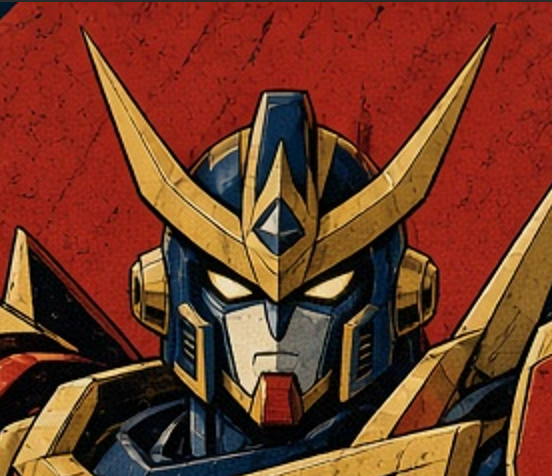
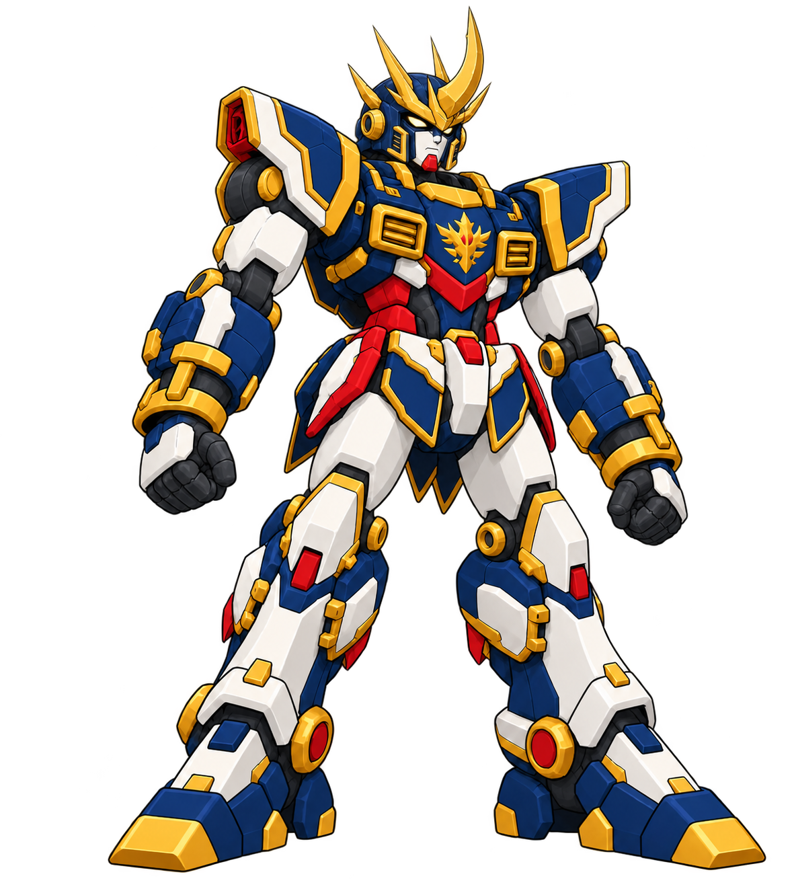
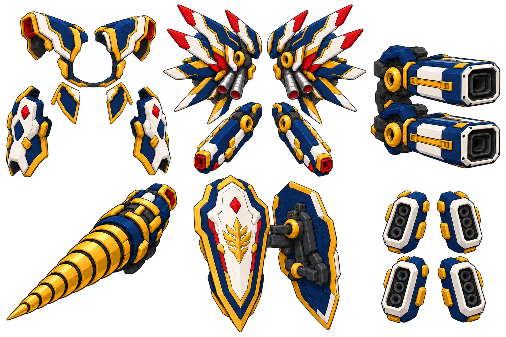

当前：恢复腿身比例的素体与全装三视。查看正、侧、背及两状态头部 →
按最新反馈弃用R10矮壮比例，分别绘制各视角。下方保留已采用的R7整机与配件来源。
最新追加：战斗面罩与红色中线鳍。查看普通脸／战斗面罩及转换示意 →
R7源稿与R8面罩已采用；本页保留基础头型和整机来源。新增红鳍双状态图见新页。
2026.10.20 · 王者头部 R6
厚根上挑额角，细侧天线分层
用户否定上一版直立箭头角，指定参考古铁巨神的头部天线和角。本轮保留图四脸、海军蓝盔体及白红金配色，改用连贯上挑的刀刃角，并收细两对侧天线。
正面中角居中；侧面表达前后弧度与倒钩。用户已指定采用这张R6b头部源图；造型与原色沿该图固定。
已选定头部正面与侧面

借用的是额角根部、逐渐收尖的轮廓和主角／侧天线层次，保留王者自己的脸与皇冠身份。认可范围为指定头部源设计；手绘多视仍不是同一模型的精确投影。
古铁巨神官方产品页 · 参考来源与本次要求 · 实际提示词 · 前视修正提示词 · 实际源稿检查
图四脸部依据与已否定的R5角


同一头型合回素体与全装
下方两张已采用选定R6b头型；本轮只同步头部，颈下身体与装备延用。R7素体与全装源设计已采用；新增红鳍与闭合面罩尚未合回这两张。



素体保留双矩形胸部散热口、冠军胸徽、红色腹部、金色圆关节及宽靴。右臂钻拆下后恢复手部，左盾通过前臂挂点装卸；肩、背和腿侧各有自己的承载位置。
配件包按六组组织

| 生产分组 | 主要零件 | 挂载位置 | 视觉作用 |
|---|---|---|---|
| P1 冠军外甲包 | 一对厚肩外罩、胸缘/腰裙附甲、一对胫外护甲 | 肩/胸/腰/胫外侧结构锁扣 | 叠出豪华厚甲，核心关节仍可读 |
| P2 分层翼与推进包 | 左右分层翼组、翼根推进筒、候选：成对低位推进舱 | 背部独立外展支架 | 维持宽阔后背轮廓并增加纵深；低位舱仅为新提案 |
| P3 背负重炮包 | 两门矩形主炮、金色圆形俯仰轴、背部主梁 | 背肩炮架；与翼架分层 | 保留两门前向主炮并让头冠净空 |
| P4 右臂钻进包 | 金色螺旋大钻、前臂驱动/锁环 | 右前臂；素体保留可恢复的手部 | 强化王者右臂既有识别点 |
| P5 左臂盾组 | 象牙白冠军主盾、盾背承托/挂架结构、候选第二层盾板：尚待单独定形 | 左前臂双层可分拆盾架 | 保持左盾识别；当前分组图展示盾体正背，不将两视图计作两片已完成盾体。 |
| P6 腿侧弹仓包 | 两侧大腿外挂弹仓、两侧小腿外挂弹仓 | 腿外侧快拆轨，不遮膝踝 | 保留冗余火力与可辨四肢 |
这些名称和分组是本轮设计整理，未新增剧情装备或运行数值。头冠通讯器保留可拆带座；“素体图”仍戴冠以便比较同一身份。
三个过度设计参考里，适合加强的部分


本轮取三点：让背肩重炮、翼架和低位推进舱分出前后层次；让肩胸缘、腰裙和胫外甲显出“套在素体外”的厚度；在头脸周围留净空，使皇冠仍是视觉中心。配件先成组，再安排大小层次，保留王者自己的钻、盾、炮、翼和配色。
实际检查与仍需收敛的位置
- 素体旧水平L角已替换为上挑刃角与两对细侧天线；白脸、红下巴、金色脸框及圆耳罩可辨。
- 素体保留正常双手、核心肩甲、双矩形胸散热口、冠军胸徽、红腹、原腿长和宽靴。
- 全装已换同方向头型；仍有右臂钻、左盾、背肩双矩形炮、分层翼、推进舱与四个腿侧弹仓。
R7素体与全装源设计已获后续用户认可；精确多视、模型和运行仍另记。 源图仍是手绘透视，不代替同模型三视、隐藏面、活动让位或运行检查。 透明通道保留，素体角尖接近画布上缘，后续游戏导出需统一安全边；本轮未把源稿当作运行立绘直接替换。
来源、实际提示词及下一工序
内置 image_gen 制作；后续在选定母稿上统一正侧背、各组接口和卸装状态。手绘方向图不代替同一模型投影或活动让位检查。
本批接续原美术设计台账。新图未发送主玩法对话，未改游戏运行；无牌已确认头部、旧拳王当前方向、馆守现有资产和固定29张源图保持。